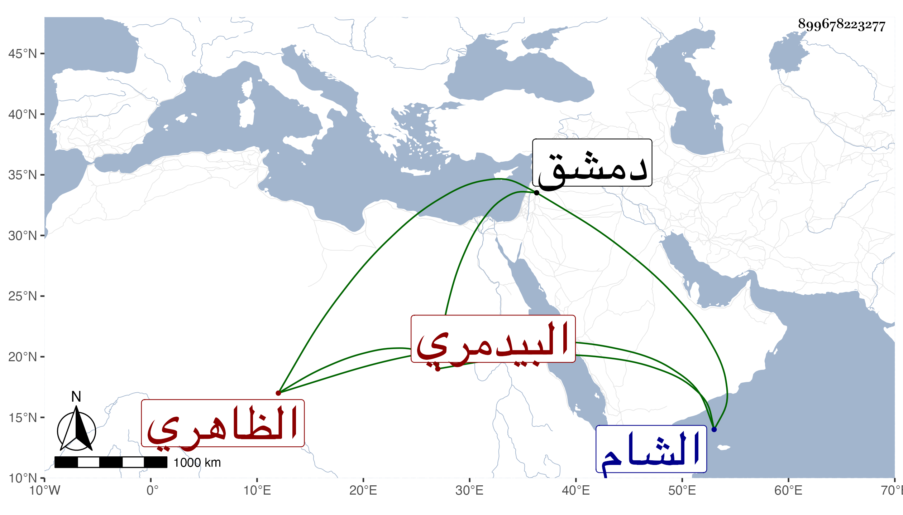

0902Sakhawi.DawLamic.ITO20230111-ara1.EIS1600.899678223277
Biography ID: 899678223277
826
أرغون شاه البيدمري الظاهري برقوق ، كان من مماليك بيدمر الخوازرمي نائب الشام فقدمه للظاهر فحظي عليه وجعله ساقيا خاصا ثم أنعم عليه بأمرة عشرة ثم طبلخاناه وجعله رأس نوبة ثم قدمه وجعله أمير مجلس وكان شجاعا جسيما خيرا محبا في العلماء والصالحين ذا خلق حسن وتواضع تركي الجنس يفهم لغة العجم ولكن مع عجلة وقلة تثبت ، قاله العيني قال وقد سمع على البخاري ومسلما والمصابيح وقتل مع أيتمش في شعبان سنة اثنتين بقلعة دمشق وقد زاد على الثلاثين ، زاد غيره وهو أبو المقام الناصري محمد بن الظاهر جقمق .
